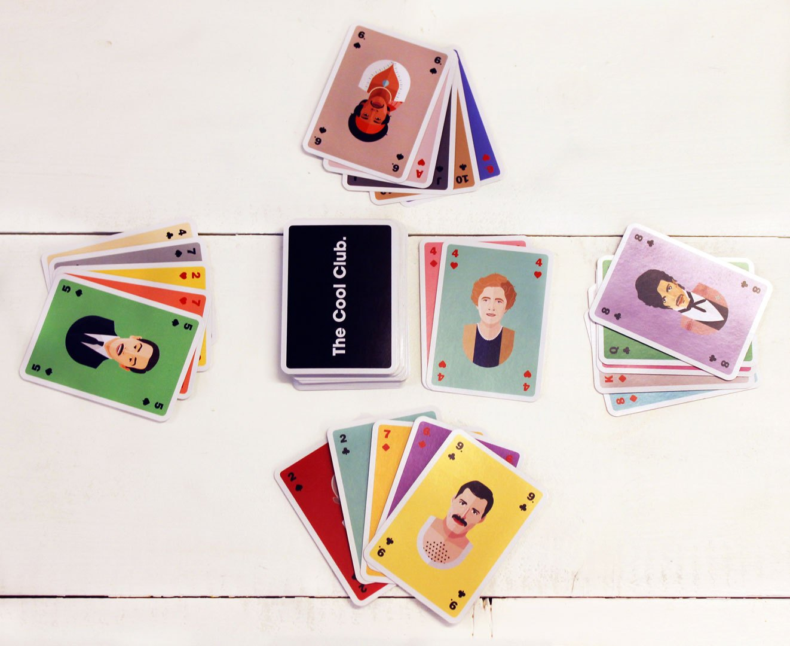
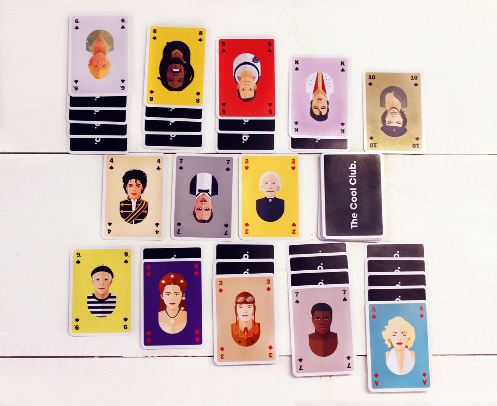

6x of THE best Dutch card games.
A nice game of cards! The best way to spend a rainy Sunday afternoon with family or friends.
With a great card game, a gruelling afternoon at Grandpa’s is transformed into a competitive battlefield where almost anything goes.
But after a couple of decades of relying on digital device for entertainment, you realise you’ve forgotten the greatest games, together with the rules.
No worries, The Cool Club to the rescue!
Below we take a moment to introduce you to the 6 coolest card games we know, including a link to the rules.
Game 1: Toepen
Toepen is a typically Dutch card game, and is known abroad as a ‘trick-taking game.’ Playing a hand involves a limited number of rounds and winning is really an achievement.
Toepen is played with the point cards (7 to A) of one card game and works with between 2 and 8 players.
Game 2: Boerenbridge
This card game is so popular that it is known under many interesting names! In Belgium it is know as Chinese Cover, Chinese Bridge or Korean Poker. We don’t really understand why our southern neighbours give this game Asian names, but we like it.
Boerenbridge also falls into the ‘trick-taking games’ category. To begin you need one deck of playing cards for this game, which can be played with 3 or more people. 4-7 players is ideal and for groups over 6 people 2 decks are recommended.

Game 3: Yaniv
Originally an Israeli card game. Myth tells us that the game was once decided by Israeli soldier Yaniv Benbenishti while he was in prison.
The Hebrew meaning of the name Yaniv is ‘You Will Triumph.’
Yaniv is a very nice and dynamic card game, which was originally popular among travellers.
After the game traveled to Fiji, it became so incredibly popular there, that it’s know as a game of Fiji.
With Yaniv the intention is to have 7 points or less at the end of each round. Each card has a set amount of points. For example picture card have 10 and jokers count as 0.
Yaniv is played with a deck of 54 cards, including the two jokers, and can be played with up to 16 players.
Game 4: Pesten
Originally an Israeli card game. Myth tells us that the game was once decided by Israeli soldier Yaniv Benbenishti while he was in prison.
The Hebrew meaning of the name Yaniv is ‘You Will Triumph.’
Yaniv is a very nice and dynamic card game, which was originally popular among travellers.
After the game traveled to Fiji, it became so incredibly popular there, that it’s know as a game of Fiji.
With Yaniv the intention is to have 7 points or less at the end of each round. Each card has a set amount of points. For example picture card have 10 and jokers count as 0.
Yaniv is played with a deck of 54 cards, including the two jokers, and can be played with up to 16 players.
https://en.wikipedia.org/wiki/Yaniv_(card_game)#Rules
Kaartspel 4: Pesten
Pesten is played with 2 players, and has many variations.
In Pesten, the whole deck is used in an attempt to make the opponent’s life miserable. One joker is often omitted.
The game is called Pesten because there are certain ‘plague cards’ to which extra rules are attached. Traditionally these are the 2, 5, 7, 8, 10, Jack, King and Ace. With these cards the opponent can be tormented further or you can put yourself at a disadvantage when pulling the wrong card.
Pesten is a nerve-racking classic!
Game 5: Jokeren
It is really your lucky day when you find two decks of card in closet, or if you happen to have received 2 sets of new Cool Club playing cards.
Jokeren is similar to the popular party game Rummikub. You can make sets in the same way and replace each card with a Joker, as it can replace any stone at Rummikub. Jokeren can be played with 2 to 5 players.
With larger groups it is advised to make 2 tables or groups.

Game 6: Zenuwen
The name says it all; Zenuwen (or Nerves) is one of the most nerve-racking card games ever.
In this game, one round can make the difference between success and being at a gigantic disadvantage.
Advantages: extra dynamics and extra tension.
Disadvantages: as previously indicated; can cause stress.
The goal is to be the first to lose all your cards first. Zenuwen can be played with 2 to 4 players. The game is played with 1 deck of cards, including jokers.
Other Cool Articles
5x fun games to pass the time.

Our top, chilled travel destinations to play
card games.

It's A Present Concept Store in Amsterdam:
Behind the scenes